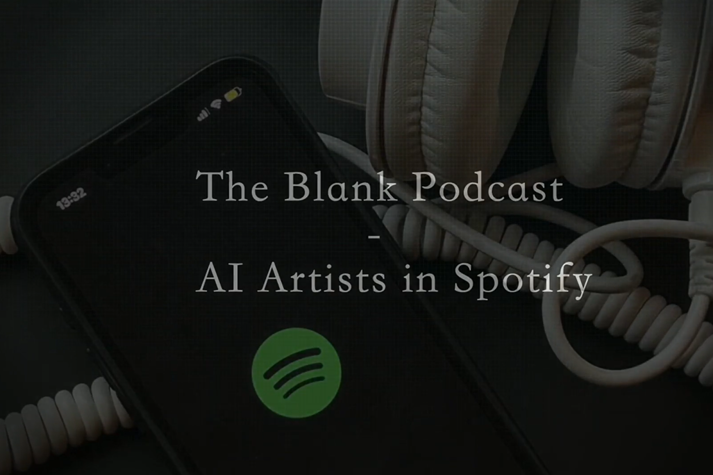

AI in Music
My coursemates and I recorded and edited a video on a topic related to digital media. The topic we chose was AI in music. As AI is becoming more and more popular, platforms like Spotify have started creating AI artists, known as ghost artists. Their music is being featured in major playlists, therefore...